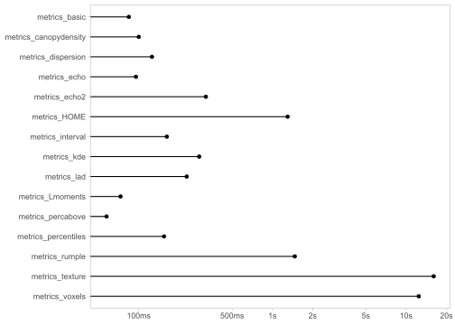

Additional point cloud metrics for use with *_metric functions in the lidR package.
The package serves as a companion to the lidR package and offers a variety of functions for calculating different types of point cloud metrics. These include metrics_basic() for basic information about the point cloud, metrics_percentiles() for height percentiles, metrics_percabove() and metrics_dispersion() for characterizing the vertical structure. Additionally, metrics_echo() and metrics_echo2() provide information on the number and proportion of different return types, while metrics_interval() calculates the percentage of points by horizontal layers. More complex metrics such as metrics_kde and metrics_voxels() are also included. A comprehensive list of metrics and their corresponding functions can be found in the table below.
These individual functions serve as building blocks that can be combined to create various sets of metrics. The package includes three examples of such metric sets.
Installation
You can install the most recent version of the package by executing the code below:
devtools::install_github("ptompalski/lidRmetrics")
library(lidRmetrics)Example usage
All of the functions in lidRmetrics are designed to be used with one of the *_metrics functions in the lidR package (e.g. pixel_metrics()).
For example:
library(lidR)
library(lidRmetrics)
LASfile <- system.file("extdata", "Megaplot.laz", package="lidR")
las <- readLAS(LASfile, select = "*", filter = "-keep_random_fraction 0.5")
# you can run any metrics_* function with cloud_metrics()
m1 <- cloud_metrics(las, ~metrics_basic(Z))
# or you can run one of the metric sets in pixel_metrics()
m2 <- pixel_metrics(las, ~metrics_set2(Z, ReturnNumber, NumberOfReturns), res = 20)
# each metrics_* function has a convenient shortcut to run it with default parameters:
m3 <- pixel_metrics(las, .metrics_set3, res = 20)Please take a look at the vignette to learn more about creating customized metric sets.
List of metrics
Important: Is there a specific metric that you feel is missing from the package? If you have any suggestions or know of a metric you’d like to see included, please let me know! You can submit an issue or create a pull request on the repository.
Simple descriptive statistics - metrics_basic()
-
n- total number of returns -
zmin,zmax,zmean,zvar,zsd,zcv,zskew,zkurt- elevation maximum, minimum, mean, standard deviation, coefficient of variation, skewness, and kurtosis
Proportion of returns above threshold height - metrics_percabove()
Proportion of returns above a user-defined threshold. By default, percent of returns above mean elevation, above 2 and 5 m are calculated.
pzabovemeanpzabove2pzabove5pzabove*
Vertical structure - metrics_dispersion()
-
ziqr- interquartile distance -
zMADmean,zMADmedian- mean absolute deviation (MAD) from the mean and the median -
CRR- canopy relief ratio ((mean - min) / (max – min)) -
zentropy,VCI- normalized Shannon diversity index, Vertical Complexity Index
see: van Ewijk, K. Y., Treitz, P. M., & Scott, N. A. (2011). Characterizing Forest Succession in Central Ontario using LAS-derived Indices. Photogrammetric Engineering and Remote Sensing, 77(3), 261-269
Cumulative point density - metrics_canopydensity()
Canopy density metrics as defined by Woods et al. 2008. Elevation range is divided into 10 equal intervals, and the cumulative proportion of returns in each interval is calculated. For example, zpcum3 is a cumulative percentage of returns located in lower 30% of maximum elevation. The results for the last (topmost) layer is not reported as it always equal to 100%. The number of layers (default = 10) can be specified by the user.
zpcum1zpcum2-
..., zpcum8zpcum9
See: M. Woods, K. Lim, and P. Treitz. Predicting forest stand variables from LiDAR data in the Great Lakes – St. Lawrence forest of Ontario. The Forestry Chronicle. 84(6): 827-839.
L-moments metrics - metrics_Lmoments()
-
L1,L2,L3,L4- 1st, 2nd, 3rd, and 4th L-moment -
Lskew- L-moment skewness -
Lkurt- L-moment kurtosis -
Lcoefvar- L-moment coefficient of variation
Interval metrics - metrics_interval()
Interval metrics - proportion of returns between specified elevation intervals. Default intervals are: 0, 0.15, 2, 5, 10, 20, and 30.
-
pz_below_0- proportion of returns below 0 -
pz_0.0.15- proportion of returns between 0 and 0.15 m pz_0.15.2pz_2.5pz_5.10pz_10.20pz_20.30-
pz_above_30- proportion of returns above 30
Number and proportion of returns by echo types - metrics_echo()
-
n_first,n_intermediate,n_last,n_single,n_multiple- Number of returns by echo types (First, Intermediate, Last; and Single, Multiple) -
p_first,p_intermediate,p_last,p_single,p_multiple- Proportion of returns by echo types (First, Intermediate, Last; and Single, Multiple) -
ratio_last_first,ratio_intermediate_first,ratio_multiple_single- Ratios of return counts
Number of points by return number - metrics_echo2()
-
n_return_1- total number of 1st returns -
n_return_2- total number of 2nd returns -
n_return_*- total number of * returns
A wrapper function for the rumple metric - metrics_rumple()
A wrapper of the lidR::rumple_index() function that allows to calculate rumple index without the need for CHM, and can be used directly in the e.g. pixel_metrics function. The function combines the two required steps, i.e. creating a surface model, and calculating rumple index, into one. Top surface is created using highest points within each pixel.
rumple
Metrics calculated using voxels - metrics_voxels()
A set of metrics calculated in a voxel space. For convenience, a point cloud is converted to a voxel space on the fly, without the need of using additional processing steps. Note, that because of the additional computation required to convert a point cloud to voxels, calculating voxel-based metrics is markedly slower than other metrics_* functions.
-
vn- total number of voxels -
vFRall,vFRcanopy- filled ratio; FRall - a ratio between the number of filled voxels and all voxels located in the maximum extent of the point cloud. In case of FRcanopy empty voxels above the canopy are excluded in the calculations. -
vzrumple- vertical rumple -
vzsd,vzcv- voxel elevation standard deviation and coefficient of variation -
OpenGapSpace,ClosedGapSpace,Euphotic,Oligophotic- Canopy volume classes based on Lefsky et al 1999
See: Lefsky, M. A., Cohen, W. B., Acker, S. A., Parker, G. G., Spies, T. A., & Harding, D. (1999). Lidar Remote Sensing of the Canopy Structure and Biophysical Properties of Douglas-Fir Western Hemlock Forests. Remote Sensing of Environment, 70(3), 339–361. doi:10.1016/S0034-4257(99)00052-8
Metrics based on kernel density estimation - metrics_kde()
Kernel density estimation (KDE) applied to the distribution of point cloud elevation (Z). KDE allows to create a probability density function (using a Guassian kernel). The density function is then used to detect peaks (function maxima), and attributes of those maxima. Based on similar metric available in Fusion (see references), with significant differences in the list of output statistics as well as the default bandwidth used when estimating kernel density.
-
kde_peaks_count- number of detected distribution maxima (peaks) -
kde_peak1_elev- elevation (height) corresponding to the 1st peak -
kde_peak2_elev- elevation (height) corresponding to the 2nd peak …-
kde_peak1_value- kernel density value at 1st peak -
kde_peak2_value- kernel density value at 2nd peak …-
kde_peak1_diff- distance (height difference) between peaks 1 and 2 -
kde_peak2_diff- distance (height difference) between peaks 2 and 3 …
See: McGaughey, R.J., 2021. FUSION/LDV: Software for LIDAR Data Analysis and Visualization. http://forsys.cfr.washington.edu/software/fusion/FUSION_manual.pdf
Height of median energy - metrics_HOME()
-
HOME- calculations based on LAStools’ implementation of the HOME metric.
GLCM (Grey-Level Co-Occurence Matrix) metrics of a canopy height model (CHM) - metrics_texture()
glcm_mean, glcm_variance, glcm_autoCorrelation, glcm_cProminence, glcm_cShade, glcm_cTendency, glcm_contrast, glcm_correlation, glcm_differenceEntropy, glcm_dissimilarity, glcm_energy, glcm_entropy, glcm_homogeneity1, glcm_homogeneity2, glcm_IDMN, glcm_IDN, glcm_inverseVariance, glcm_maxProb, glcm_sumAverage, glcm_sumEntropy, glcm_sumVariance
Requires the {ForestTools} package (https://github.com/andrew-plowright/ForestTools). ForestTools::glcm() function is used to calculate the GLCM statistics (see package manual for details)
Benchmarking
The processing time required for each function in the package varies, sometimes significantly, depending on the calculations involved. The figure below presents the average processing time for each metrics_* function included in the package. This benchmark was conducted using the “Megaplot.laz” dataset from the lidR package, with iterative calls to the pixel_metrics() function. It’s important to note that the results of this benchmark are dependent on the workstation’s specifications and should be considered as a relative indication of the processing time required.

The figure below presents the average processing time for each metrics_set* function.